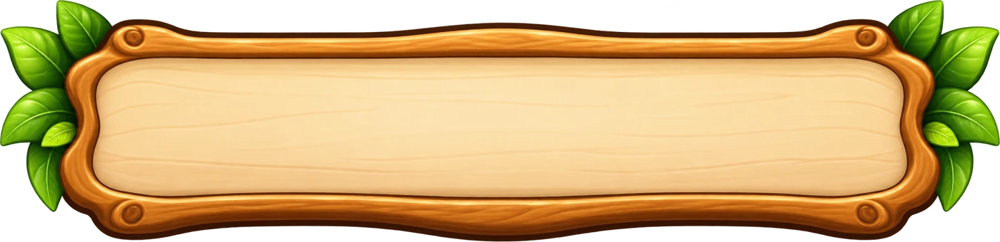
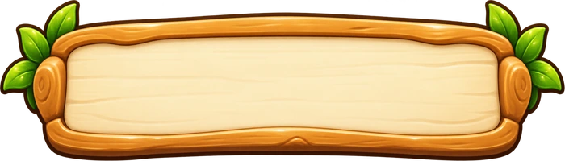
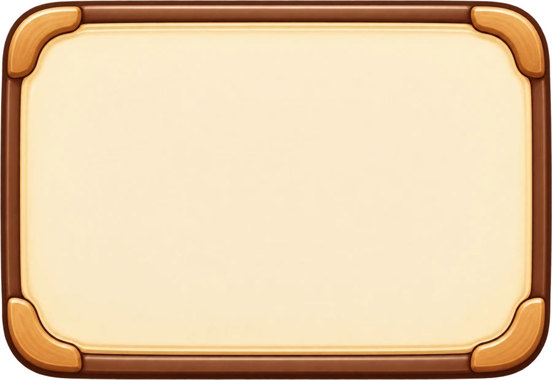
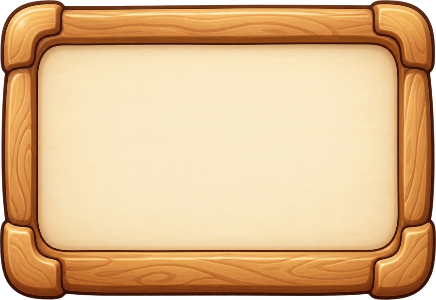
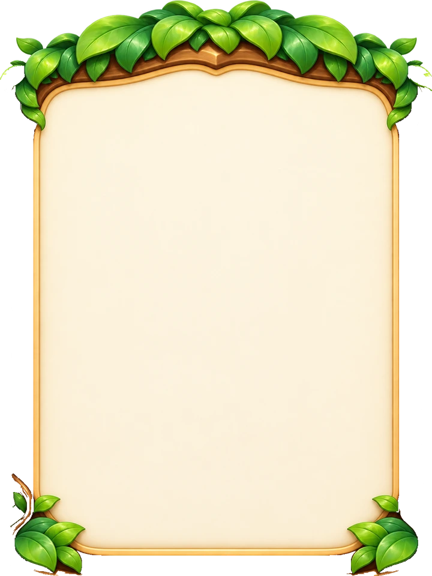

CEO Domain Quest · Kit2 art preview
ตัวอย่างข้อความเป็น HTML สด — ไม่มีตัวอักษรฝังอยู่ในภาพ ชุดปุ่มด้านล่างถูกยืดด้วยชิ้นกลางที่ความกว้าง 240, 360 และ 560px เพื่อเช็กการต่อขอบ
Live classes at three widths
240px
แผนที่เกาะธุรกิจ
ภารกิจวันนี้: วางแผนร้านให้พร้อม
360px
ร้านค้าของโดม
เขียนคำตอบและบันทึกความคิดของเรา
560px
ป้ายภารกิจพิเศษ
หน้าต่างสรุปผลการเรียนรู้
โดมจะช่วยพาเราไปด่านถัดไป
โดมจะช่วยพาเราไปด่านถัดไป
All blank source assets





Button slices
Small pieces
Live pieces:ชิปข้อมูลแท็บที่เลือกแท็บพัก